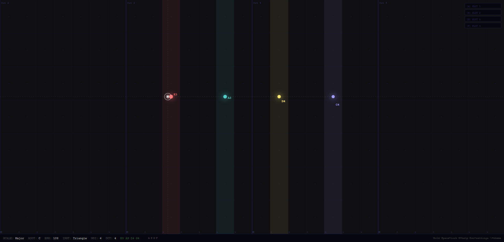

Move your mouse. Make music. An interactive musical canvas inspired by Laurie Spiegel's 1986 classic.

Music Mouse is a browser-based musical instrument where your mouse position controls what you hear. Moving left and right changes the harmonic pattern; moving up and down changes the rhythm and density of notes. It's endlessly playable and requires no musical knowledge.
The original Music Mouse was a software instrument created by composer Laurie Spiegel for the Macintosh in 1986. It was one of the first truly accessible digital instruments — the idea that anyone could make music just by moving a pointer was radical then, and still feels magical today.
Anyone curious about music. You don't need to know how to play an instrument. Just move your mouse around and discover what sounds good to you. It's also a great toy for kids, a meditation tool, or a creative starting point for musicians.
I'd always loved the concept of Laurie Spiegel's Music Mouse — the idea that an ordinary computer mouse could be a musical instrument. I wanted to see if I could bring that experience to the modern web browser, accessible to anyone with a link.
I described the concept to Claude Code: a canvas where mouse movement controls pitch and rhythm using the Web Audio API, inspired by the 1986 original. What came back was a working prototype in the first conversation. From there, it was about refinement — adding scales, improving the visual feedback, making it feel responsive and alive.
The entire project was a conversation. I never opened a code editor. I described what I wanted to hear, what I wanted to see, and Claude Code translated that into working JavaScript.
The Web Audio API is surprisingly expressive. What started as "just make sounds when I move the mouse" became a genuinely playable instrument with real musical depth. Claude Code knew the API well enough to implement things I didn't even know to ask for.
"I described a feeling. An AI built the instrument that creates it."
Pure web platform. No frameworks, no build tools, no server needed. Open the file, play music.
💬 Comments
No account needed — just enter your name and comment